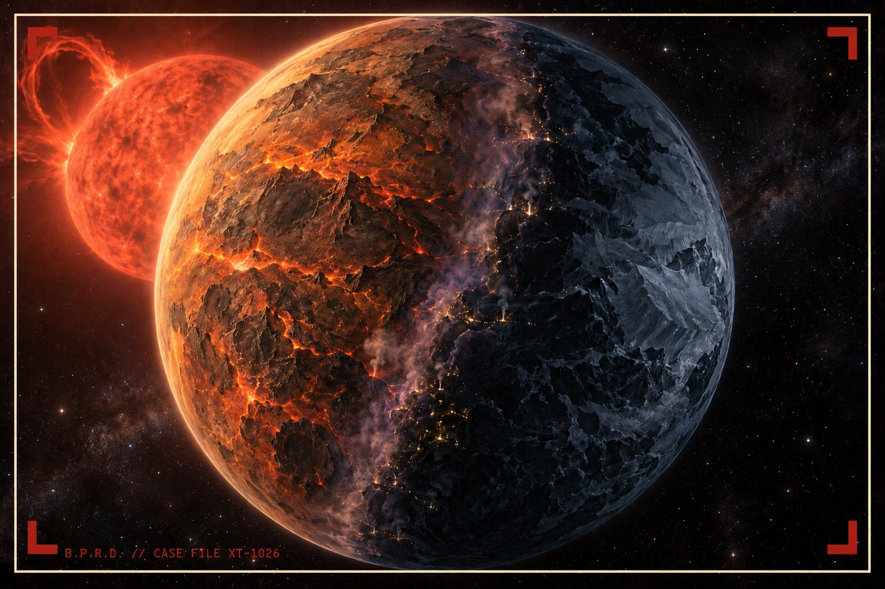

Section 1: Field Observations
The following facts were gathered over several months of observation. Each has been verified and filed, and each has made the analysts on this case slightly more confused.
Observation 1: The subject is technically very old
A year on Proxima b lasts approximately 11.2 Earth days. By Kethri reckoning, the subject has therefore celebrated more than one thousand birthdays. He does not expect a cake for each of them, but he has not ruled it out.
Observation 2: The subject enjoys Toronto winters
While human residents complain about the cold and the early darkness, the subject has been observed walking slowly through February evenings with visible contentment. Analysts believe the long nights remind him of home. One agent described his expression as “suspiciously peaceful.”
Observation 3: The subject rearranges rooms
Within approximately forty minutes of entering any shared space, the subject will have moved at least one chair, table, or lamp to improve how people move through the room. Classmates rarely notice the change. They only notice that the room now feels better, which is exactly how the Comfort Incident began.A
Section 2: Survival Guide for Working With the Subject
Agents assigned to group projects with the subject must follow this procedure in order.
- Do not seat the subject beside a sunny window. He will not complain, but he will slowly migrate toward the darkest corner of the room, taking the group’s whiteboard with him.
- Bring him problems, not solutions. He will redesign your solution regardless, so it saves time.
- Never describe any piece of work as “good enough.” The subject regards this phrase as a formal challenge.
- If the subject begins sketching on any available surface, including napkins, receipts, or the back of the assignment brief, do not interrupt. Wait until the sketching stops.
- Schedule meetings in the late evening when possible. This is when the subject is at his sharpest and most agreeable.
- Keep the subject fed. He is conducting an ongoing survey of Earth cuisine and becomes noticeably more cooperative after dumplings.
- When a deadline approaches, provide one (1) quiet, dimly lit room and one (1) laptop. Then step back.
Section 3: Greatest Weaknesses
Despite his capabilities, the subject is not invulnerable. The Bureau has identified the following weaknesses, which are recorded here in case containment is ever required.
- Direct sunlight. Proxima Centauri is a dim red star. Earth’s Sun is, by comparison, extremely loud. The subject squints, slows down, and seeks shade.
- Badly designed objects. Doors that require a “PUSH” sign, forms that lose their contents when submitted, and remote controls with forty identical buttons cause the subject visible distress.
- His own work. The subject cannot stop improving things. This is the same weakness that led to his exile, and the Bureau notes that he has not learned from it in the slightest.
- A truly comfortable chair. Once seated in one, the subject becomes very difficult to remove. The irony has not been lost on the Kethri Council.
Section 4: Future Ambitions
The subject’s long-term intentions on Earth remain unconfirmed. The analysts assigned to this case have produced three competing theories and have not spoken to each other since.
Theory A: Reconnaissance
Submitted by Senior Agent ███. The subject enrolled in a digital media program to study how humans communicate through screens. He is compiling a full report on human interfaces for transmission back to Proxima b, and his coursework is a cover for that research.
Theory B: Redemption
Submitted by Dr. ███, Bureau Xenopsychology. The subject hopes to design something so genuinely useful that the Kethri Council will lift his exile. His ambition is to return home, eventually, with proof that good design can serve people without trapping them.
Theory C: He likes it here
Submitted by the summer intern. The subject has made friends, found a favourite dumpling restaurant, and plans to keep making useful things for humans for as long as they let him. This theory was initially dismissed and is now gaining support.
Bureau verdict: STILL UNDER ASSESSMENT. Next review scheduled after the subject’s graduation.
Section 5: Homeworld Reconstruction

Section 6: External Intelligence
Humans are aware of the subject’s homeworld but not of its inhabitants. The Bureau monitors the following public sources for any sign that this is changing.
- The SETI Institute: the leading human effort to detect intelligent life beyond Earth. They are looking in the right direction.
- Proxima Centauri b reference entry: what human astronomers currently know about the subject’s homeworld. Notably incomplete.
Field Agent Notes
- Agent ███ reports that the subject rearranged the Bureau’s own interview room during questioning. Productivity in that room has since risen by 30 percent. Nobody has moved the furniture back.